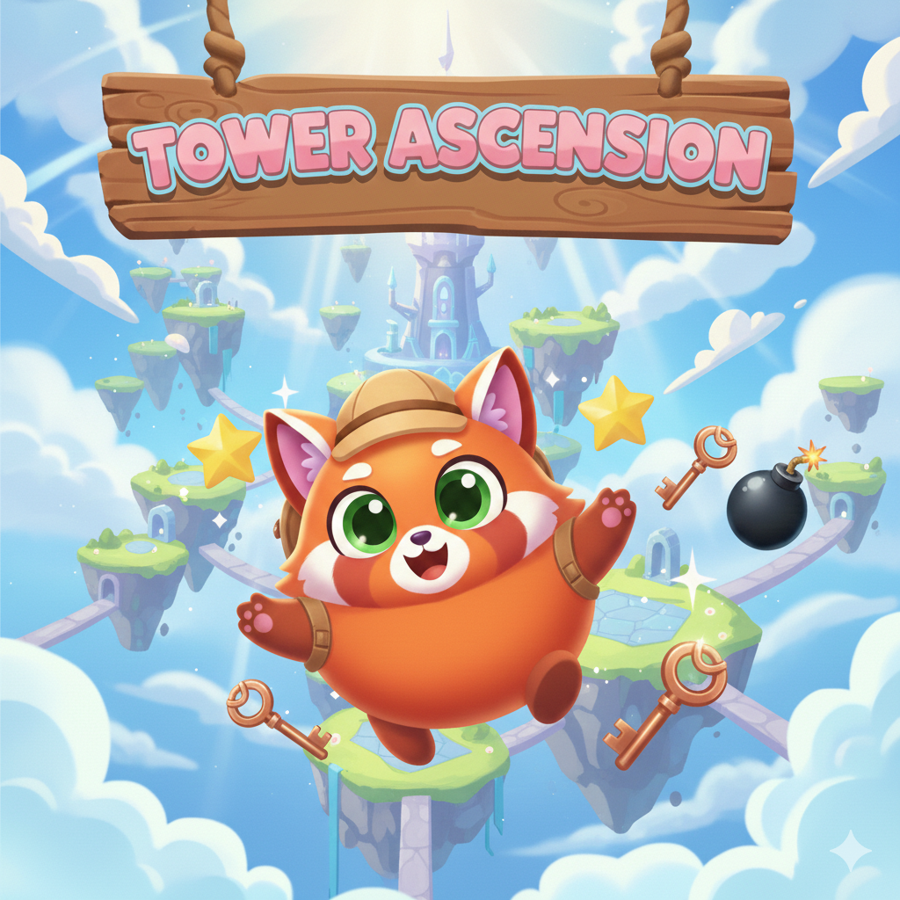

Move & jump
Use A/D or Left/Right to move and W/Up to jump, or use the on-screen joystick.
FROM THE BILLA CHUHA COLLECTION
A platform challenge with moving stairs, coins and enemies. Time your double jumps and use your shots while exploring the stage.

Use A/D or Left/Right to move and W/Up to jump, or use the on-screen joystick.
Press Space or hold the on-screen Fire button.